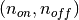
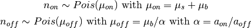
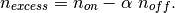
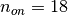
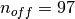
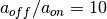

gammapy.stats holds statistical estimators, fit statistics and algorithms commonly used in gamma-ray astronomy.
It is mostly concerned with the evaluation of one or several observations that count events in a given region and time window, i.e. with Poisson-distributed counts measurements.
For on-off methods we will use the following variable names following the notation in [Cousins2007]:
| Variable | Definition |
|---|---|
| n_on | Total observed counts in the on region |
| n_off | Total observed counts in the off region |
| mu_on | Total expected counts in the on region |
| mu_off | Total expected counts in the off region |
| mu_signal | Signal expected counts in the on region |
| mu_background | Background expected counts in the on region |
| a_on | Relative background efficiency in the on region |
| a_off | Relative background efficiency in the off region |
| alpha | Background efficiency ratio a_on / a_off |
The following formulae show how an on-off measurement  is related to the quantities in the above table:

The maximum likelihood estimate of a signal excess is

When the background is known and there is only an “on” region (sometimes also called “source region”), we use the variable names n_observed, mu_observed, mu_signal and mu_background.
| Variable | Definition |
|---|---|
| n_observed | Observed counts |
| mu_observed | Expected counts (signal + background) |
Here’s some references describing the available methods: [LiMa1983], [Cash1979], [Stewart2009], [Rolke2005], [Feldman1998], [Cousins2007].
As an example, assume you have measured  counts in a region where you suspect a source might be present and  counts in a background control region where you assume no source is present and that is  times larger than the on-region.
Here’s how you compute the statistical significance of your detection with the Li & Ma formula:
>>> from gammapy.stats import significance_on_off
>>> significance_on_off(n_on=18, n_off=97, alpha=1. / 10, method='lima')
2.2421704424844875
TODO: More examples.
Statistics utility functions and classes
| background(n_off, alpha) | Estimate background in the on-region from an off-region observation. |
| background_error(n_off, alpha) | Estimate standard error on background in the on region from an off-region observation. |
| cash(n_observed, mu_observed) | Cash statistic, for Poisson data. |
| chi2(N_S, B, S, sigma2) | Chi-square statistic with user-specified variance. |
| chi2constvar(N_S, N_B, A_S, A_B) | Chi-square statistic with constant variance. |
| chi2datavar(N_S, N_B, A_S, A_B) | Chi-square statistic with data variance. |
| chi2gehrels(N_S, N_B, A_S, A_B) | Chi-square statistic with Gehrel’s variance. |
| chi2modvar(S, B, A_S, A_B) | Chi-square statistic with model variance. |
| chi2xspecvar(N_S, N_B, A_S, A_B) | Chi-square statistic with XSPEC variance. |
| combine_stats(stats_1, stats_2[, weight_method]) | Combine using some weight method for the exposure. |
| compute_total_stats(counts, exposure[, ...]) | Compute total stats for arrays of per-bin stats. |
| convert_likelihood(to[, probability, ...]) | Convert between various equivalent likelihood measures. |
| cov_to_corr(covariance) | Compute correlation matrix from covariance matrix. |
| cstat(n_observed, mu_observed[, n_observed_min]) | C statistic, for Poisson data. |
| excess(n_on, n_off, alpha) | Estimate excess in the on region for an on-off observation. |
| excess_error(n_on, n_off, alpha) | Estimate standard error on excess in the on region for an on-off observation. |
| lstat() | L statistic, for Poisson data with Poisson background (Bayesian). |
| make_stats(signal, background, area_factor) | Fill using some weight method for the exposure. |
| pgstat() | PG statistic, for Poisson data with Gaussian background. |
| probability_to_significance_normal(probability) | Convert one-sided tail probability to significance. |
| probability_to_significance_normal_limit(...) | Convert tail probability to significance in the limit of small p and large s. |
| sensitivity(mu_background, significance[, ...]) | Compute sensitivity. |
| sensitivity_on_off(n_off, alpha, significance) | Compute sensitivity of an on-off observation. |
| significance(n_observed, mu_background[, method]) | Compute significance for an observed number of counts and known background. |
| significance_on_off(n_on, n_off, alpha[, ...]) | Compute significance of an on-off observation. |
| significance_to_probability_normal(significance) | Convert significance to one-sided tail probability. |
| significance_to_probability_normal_limit(...) | Convert significance to tail probability in the limit of small p and large s. |
| wstat() | W statistic, for Poisson data with Poisson background. |
| PoissonLikelihoodFitter(optimizer, statistic) | Poisson likelihood fitter. |
| Stats(n_on, n_off, a_on, a_off) | Container for an on-off observation. |